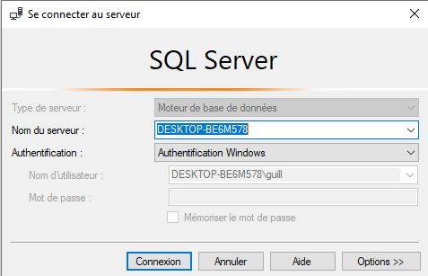
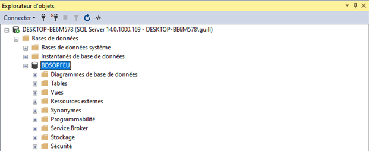
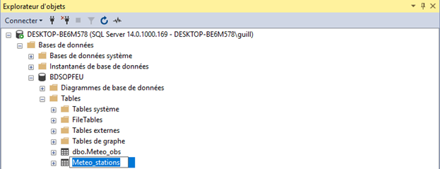

MSS_Server
Connexion to Microsoft SQL Server Management Studio
This is a short tutorial to connect python to a Miscrosoft SQL Server.
Steps to connect with pyodbc python library
You need to know some informations on your local server, database and tables you want to connect: In our case: - The Server Name is: DESKTOP-BE6M578 - The Database Name is: BDSOPFEU - The Table Name is: dbo.Meteo_stations - The Table dbo.Meteo_stations containes stations information
1 Retrieve your server name
You can get your server name by opening Microsoft SQL Server. You’ll then see the Connect to Server box, where the server name will be displayed.
In my case, the server name is: DESKTOP-BE6M578

2 Retrieve your Database name
Next, you’ll need to obtain the database name in which your desired table is stored.
You can find the database name under the Object Explorer menu (underneath the Databases section) which is located on the left-hand side of your SQL Server.
In our example, the database name is: BDSOPFEU

3 Get the table name
Now you’ll need to get the name of your desired table.
The name of your table would also be located under the Object Explorer menu (underneath the Tables section).
Here, the name of the table is: dbo.Meteo_stations

4 Connect Python to our Microsoft SQL Server
Now we have all the informations about our server and database to connect Python .
Here is the structure of the code that you may use in Python:
import pyodbc conn = pyodbc.connect(‘Driver={SQL Server};’ ‘Server=server_name;’ ‘Database=db_name;’ ‘Trusted_Connection=yes;')
cursor = conn.cursor() cursor.execute(‘SELECT * FROM db_name.Table’)
for row in cursor: print(row) And this is how the code would look like in Python using our example:
import pyodbc
connexion = pyodbc.connect('Driver={SQL Server};'
'Server=DESKTOP-BE6M578;'
'Database=BDSOPFEU;'
'Trusted_Connection=yes;')
cursor = connexion.cursor()
cursor.execute('SELECT * FROM BDSOPFEU.dbo.Meteo_stations')
# to loop over each row
#for row in cursor:
# print(row)
row = cursor.fetchone()
print(row)
connexion.close()
(111, datetime.datetime(1978, 4, 1, 0, 0), 1, 'STE-PERPETUE', '4113-1-5355', 111, datetime.datetime(1989, 10, 31, 0, 0), 400, 'M', 'N', 1, 1, 'MFFP_CEL', None, 13, ' ', None, False, None, None, None)
- For having basic informations about our table:
columns = [column[0] for column in cursor.description]
columns
['No_station',
'Ouverture',
'Base',
'Nom',
'Quadr',
'Secteur',
'Fermeture',
'Elevation',
'T_hr',
'Vent',
'T_donnees',
'T_station',
'Provenance',
'Stn_mere',
'Hre_levee',
'Memo',
'Contour',
'Active',
'Cladonie',
'Latitude',
'Longitude']
Now, I’ll show you how to get data from SQL to pandas DataFrame.
import pyodbc
import pandas as pd
connexion = pyodbc.connect('Driver={SQL Server};'
'Server=DESKTOP-BE6M578;'
'Database=BDSOPFEU;'
'Trusted_Connection=yes;')
SQL_Query = pd.read_sql_query(
'''SELECT
Nom, No_station, Latitude, Longitude
FROM dbo.Meteo_stations
WHERE Active = 'True' ''', connexion)
df = pd.DataFrame(SQL_Query)
df.head()
.dataframe tbody tr th {
vertical-align: top;
}
.dataframe thead th {
text-align: right;
}
import pyodbc
import pandas as pd
connexion = pyodbc.connect('Driver={SQL Server};'
'Server=DESKTOP-BE6M578;'
'Database=BDSOPFEU;'
'Trusted_Connection=yes;')
SQL_Query = pd.read_sql_query(
'''SELECT
Date,
Heure,
Pluie,
Hr,
Tsec,
Thum,
Vv,
Vvr
FROM dbo.Meteo_obs
WHERE No_station = 111''', connexion)
df = pd.DataFrame(SQL_Query)
df.tail()
.dataframe tbody tr th {
vertical-align: top;
}
.dataframe thead th {
text-align: right;
}
Guillaume Dueymes
Data Scientist and Research Assistant
My research interests include data science, data management and climate science.